¿Qué querés hacer?
31 guías cortas para corregir cañerías en obra y devolverlas a Plant 3D. Si es tu primera vez, empezá por las cuatro de Primeros pasos.
No encontramos guías con esa palabra. Probá con otra, por ejemplo “caño”, “brida” o “exportar”.
Primeros pasos
Instalar la app en el celular y en la PC
Instalada, la app abre como cualquier otra, sin barra del navegador, y funciona sin señal en la obra.
- Abrí en Chrome (Android o PC) la dirección de la app que te pasó la oficina técnica.
- Esperá unos segundos a que termine de cargar. La primera vez se baja todo lo necesario para trabajar sin señal, incluidas las specs y el motor de base de datos.
- Tocá Proyecto ▾ arriba a la izquierda y después ⤓ Instalar la app en este equipo. Si ese botón no aparece, abrí el menú ⋮ de Chrome y elegí Instalar app o Agregar a pantalla principal.
- Buscá el ícono azul con el codo y las bridas naranjas en la pantalla de inicio, y abrila desde ahí.
Conocer la pantalla
La pantalla imita a Plant 3D: una cinta de botones arriba, el modelo 3D en el centro y paletas flotantes que podés mover.
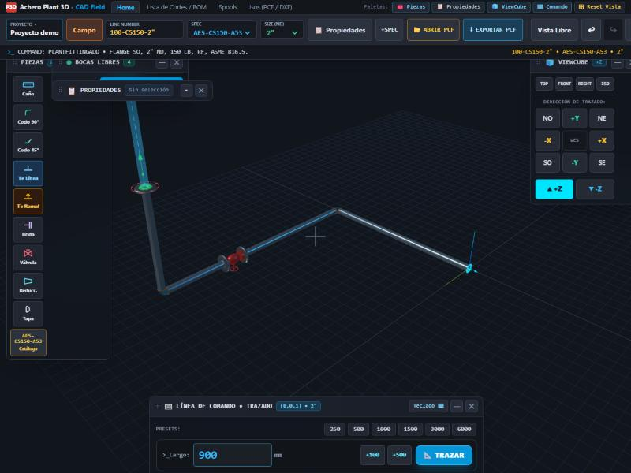
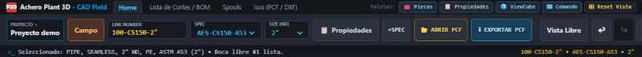
| Zona | Para qué sirve |
|---|---|
| Proyecto ▾ | Proyectos guardados en el equipo (guía 23). |
| Campo | Cambios respecto de Plant, notas con fotos e informe (bloque En obra). |
| Line Number, Spec, Size | Línea, especificación y diámetro con que se traza lo próximo. |
| Propiedades | Despliega los datos de la pieza seleccionada. |
| +SPEC ABRIR PCF EXPORTAR PCF | Cargar una spec de Plant, abrir un PCF y bajar el PCF corregido. |
| Vista Libre / Route Pipe | Si la cámara sigue o no a la boca donde estás trazando. |
| ↩ ↪ EXT | Deshacer, rehacer y encuadrar todo el modelo. |
| Spools Lista de Cortes Iso / DXF | Salidas para taller: spools, cortes y planos. |
| ↺ | Vacía el modelo del proyecto abierto (se puede deshacer). |
| Línea de estado | La franja debajo de la cinta. Muestra lo último que hizo la app, o por qué no pudo hacerlo. A la derecha: línea, spec y diámetro activos. |
Mostrar, ocultar y acomodar las paletas
Hay cinco paletas flotantes. En el celular conviene dejar a la vista solo las que estás usando.
| Paleta | Qué tiene |
|---|---|
| Piezas | Botones para insertar caño, codos, tes, brida, válvula, reducción y tapa, y el catálogo completo. |
| Propiedades | Datos y acciones de la pieza seleccionada. |
| ViewCube | Vistas (TOP, FRONT, RIGHT, ISO) y la dirección en que se traza. |
| Línea de comando | El largo a trazar y el botón TRAZAR. |
| Bocas libres | Cuántos extremos abiertos tiene el modelo y el botón para saltar entre ellos. Aparece sola cuando hay bocas libres. |
- Mostrar u ocultar: en la fila de arriba a la derecha, tocá Piezas, Propiedades, ViewCube o Comando. Encendido es que está a la vista.
- Mover: arrastrá la paleta tomándola del título (la zona con los puntitos ⠿).
- Plegar: el botón — del título la deja solo con el encabezado. Tocalo de nuevo para desplegarla.
- Cerrar: el botón ✕. Se vuelve a abrir desde la fila de arriba.
- Ordenar todo: ⊞ Reset Vista devuelve todas las paletas a su lugar y las vuelve a mostrar, incluida Bocas libres.
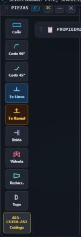
Moverse en 3D
Girar, acercarse y encuadrar el modelo sin tocar nada por error.
| Querés | Celular o tablet | PC |
|---|---|---|
| Girar alrededor del modelo | Arrastrar con un dedo | Arrastrar con el botón izquierdo |
| Acercar o alejar | Pellizcar con dos dedos | Rueda del mouse |
| Desplazar la vista | Arrastrar con dos dedos | — |
| Seleccionar una pieza o una boca | Tocarla sin arrastrar | Clic sin arrastrar |
| Soltar la selección | Tocar el fondo vacío | Clic en el fondo |
- Si te perdiste, tocá EXT: encuadra todo el modelo.
- Para una vista exacta usá los botones del ViewCube: TOP (planta), FRONT, RIGHT o ISO.
- Con Route Pipe encendido, la cámara se centra sola en la boca donde estás trazando. Con Vista Libre la cámara se queda donde la dejaste.
Modelar desde cero
Empezar un proyecto nuevo
Cada trabajo va en su propio proyecto. Se guarda solo en el equipo cada vez que cambiás algo.
- Tocá Proyecto ▾ y después + Proyecto vacío. Se abre un modelo en blanco llamado “Proyecto 2”, “Proyecto 3”…
- Para ponerle nombre, en la misma ventana tocá Renombrar en su tarjeta, escribí el nombre (por ejemplo “Skid ácido · línea 300”) y OK.
- Cerrá la ventana con ✕. En el campo Line Number de la cinta escribí el número de línea, como en Plant: 300-CS150-2".
- Revisá que la Spec sea la del proyecto (guía 06) y elegí el diámetro en Size (ND).
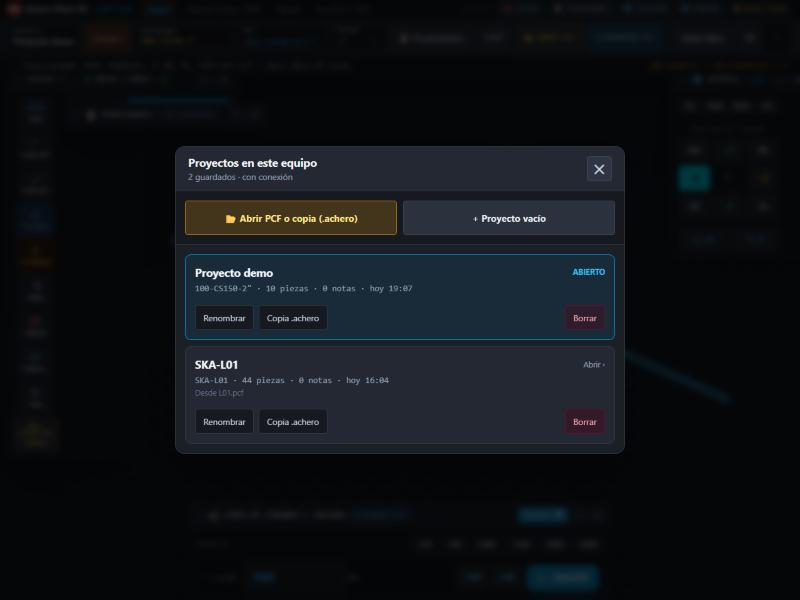
Elegir o cargar la spec
La spec decide qué caños, codos, bridas y válvulas puede usar la app, igual que en Plant 3D.
- Spec integrada: en el selector Spec de la cinta elegí una de las que vienen con la app (RCI1, CS150, CS300, SS150).
- Spec de tu proyecto de Plant: tocá +SPEC y elegí juntos, en el mismo paso, estos archivos de la carpeta de specs del proyecto de Plant:
- la .pspc de la spec (obligatoria),
- su .pspx (para respetar las prioridades de Plant),
- el DefaultConnectorsConfig.xml del proyecto (para las uniones y juntas).
- Leé la línea de estado: dice cuántas piezas y diámetros tiene la spec y si falta algún archivo.
Trazar el primer tramo de caño
Se traza como en Plant: elegís hacia dónde, cuánto, y tocás TRAZAR. Las medidas son de eje a eje.
- En el ViewCube, en Dirección de trazado, tocá hacia dónde va el caño. La dirección elegida queda en celeste. Igual que en Plant: X es el Este, Y es el Norte y Z es arriba.
- En la Línea de comando poné el largo en milímetros: tocá un preset (250 a 6000), escribilo en Largo, o sumá con +100 y +500.
- Tocá 📐 TRAZAR (en la PC también sirve Enter). El caño aparece desde el origen y su extremo queda como boca activa.
- Para seguir derecho, poné otro largo y volvé a tocar TRAZAR.
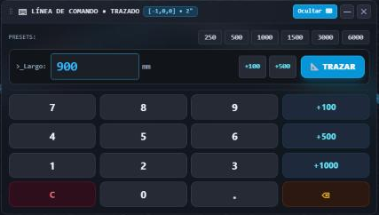
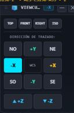
Doblar con codos automáticos
Para doblar no hace falta poner el codo a mano: elegís la nueva dirección y la app lo pone.
- Con la boca activa al final de un caño, tocá en el ViewCube la nueva dirección. Por ejemplo, venías al Este (+X) y ahora vas al Norte (+Y).
- Poné el largo del tramo nuevo y tocá TRAZAR.
- La app pone el codo de 90° de la spec en el vértice y descuenta del caño anterior lo que ocupa el codo. Las medidas siguen siendo de eje a eje, al vértice.
- Para un codo de 45°, elegí una diagonal (NE, NO, SE, SO).
Subir y bajar de cota
Para subir o bajar se usan los dos botones de abajo del ViewCube.
- Tocá ▲ +Z para subir o ▼ −Z para bajar.
- Poné cuánto sube o baja (de eje a eje) y tocá TRAZAR. El codo se pone solo, como en cualquier giro.
- Para ver a qué altura quedó un caño, seleccionalo y mirá en Propiedades Eje Z (altura del eje) y BOP (fondo del caño).
Insertar accesorios con la paleta Piezas
Cada botón pone la pieza de la spec en la boca activa, con sus juntas y espárragos cuando corresponde.
| Botón | Qué hace |
|---|---|
| Caño | Tramo recto en la dirección de la boca, con el largo de la Línea de comando. |
| Codo 90° Codo 45° | Codo hacia la dirección elegida en el ViewCube. |
| Te Línea | Te igual, y seguís por la línea principal. |
| Te Ramal | Te igual, y seguís por el ramal a 90°. |
| Brida | Brida de la spec con su junta y espárragos. |
| Válvula | Válvula bridada con dos juntas y dos juegos de espárragos. |
| Reducc. | Reducción concéntrica al diámetro siguiente más chico que tenga la spec. |
| Tapa | Casquete (cap) que cierra la boca. |
| Catálogo | Abre todas las piezas de la spec (guía 13). |
- Asegurate de que la boca activa sea la correcta: es la que se ve resaltada. Si no, tocá la boca que querés en 3D.
- Tocá el botón de la pieza. La pieza aparece y la boca activa pasa a su otro extremo.
- Leé la línea de estado: dice qué pieza exacta de la spec se usó.
Tees, ramales y bocas libres
Cada te deja una boca abierta. Esto es cómo pasar de una boca a otra para terminar todas las ramas.
- Para elegir hacia dónde sale el ramal antes de ponerla, abrí Catálogo, buscá la Te y tocá la dirección en Ramal hacia (+Z, −Z, +Y, −Y…). Después Seguir o Ramal.
- La paleta Bocas libres muestra cuántas bocas abiertas hay. Tocá ⇄ Cambiar Boca/Ramal para saltar a la siguiente.
- También podés tocar directamente el anillo de una boca en 3D.
- Con una te seleccionada, en Propiedades tenés Seguir Línea (#2) y Salir Ramal (#3) para elegir desde qué boca seguir.
Cambiar de diámetro con una reducción
Para pasar de 3" a 2", la reducción se pone sola al cambiar el diámetro.
- Con la boca activa en el extremo donde cambia el diámetro, elegí el nuevo valor en Size (ND) de la cinta.
- La app pone la reducción de la spec entre los dos diámetros y deja la boca activa del lado nuevo.
- Seguí trazando: todo lo que viene ya sale en el diámetro nuevo.
Usar el catálogo completo y fijar familias
El catálogo muestra qué pieza exacta va a usar la app en cada tipo, y te deja elegir otra familia de la spec.
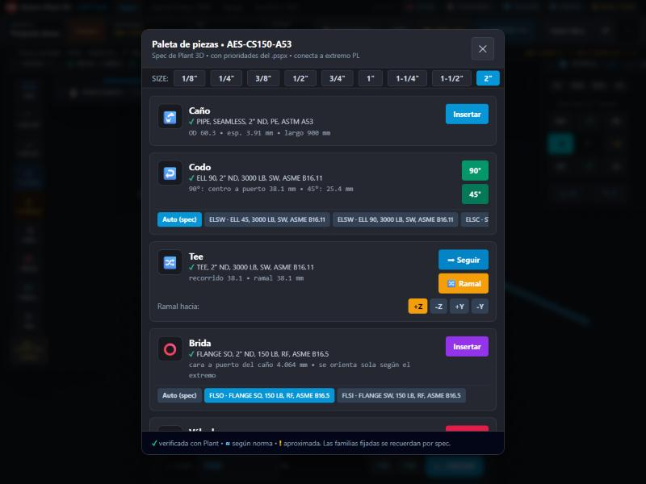
- Tocá Catálogo en la paleta Piezas.
- Arriba elegí el diámetro (Size). Cada bloque muestra la pieza que se va a usar. La marca de adelante dice cuánto se confía en su geometría: ✓ verificada con Plant, ≈ según norma, ! aproximada.
- Si la spec tiene varias familias (por ejemplo, brida slip-on o socket-weld), tocá la que quieras. Auto (spec) vuelve al orden de prioridad de Plant.
- Insertá con los botones de cada bloque: Insertar, 90° o 45°, Seguir o Ramal, y en reducciones elegí a qué diámetro en Reduce a.
Corregir
Seleccionar una pieza y ver sus propiedades
Seleccionar una pieza es el primer paso para corregirla.
- Tocá la pieza en 3D. Se pinta de celeste y la línea de estado dice cuál es.
- Tocá Propiedades en la cinta (o en el título de la paleta Propiedades) para desplegar sus datos.
- Lo que vas a ver, por secciones: Identificación (marca, línea, spec, descripción y extremos), Geometría (diámetro, schedule, diámetro exterior, espesor, largo), Extremos y uniones, Coordenadas (Eje Z y BOP) y Acciones.
- Plegar la achica de nuevo sin perder la selección.
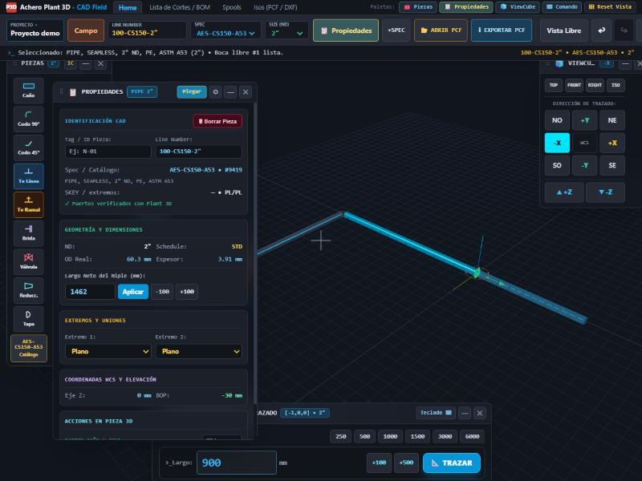
Elegir qué datos muestra Propiedades
En el celular conviene ver solo lo justo. Cada uno arma su paleta.
- Con Propiedades desplegada, tocá el engranaje ⚙ del título.
- Elegí un preset: Compacto (lo esencial para campo), Taller (cortes y extremos) o Completo (todo, con coordenadas).
- O marcá y desmarcá cada campo en la lista. Tocá Listo para cerrar.
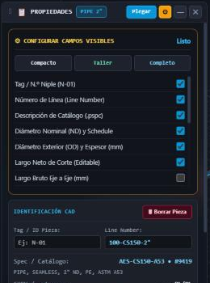
Cambiar el largo de un caño
La corrección más común en obra: el caño medía 234 y en realidad mide 334.
- Seleccioná el caño y desplegá Propiedades.
- En Largo Neto del Niple (mm) escribí la medida real y tocá Aplicar. O usá −100 y +100.
- Todo lo que sigue aguas abajo se corre lo mismo, con sus accesorios. Lo de aguas arriba no se mueve.
Intercalar una te, válvula o brida en un caño
Para agregar una pieza en medio de un caño que ya existe, sin redibujar la línea.
- Seleccioná el caño y desplegá Propiedades. Bajá hasta Acciones en pieza 3D.
- En Partir caño a (mm) poné a qué distancia del inicio del caño va el centro de la pieza. Si lo dejás vacío, va al medio.
- Tocá + Te, + Válvula o + Brida. El caño se parte en dos niples, cada uno con su largo, y conservan la descripción y la spec.
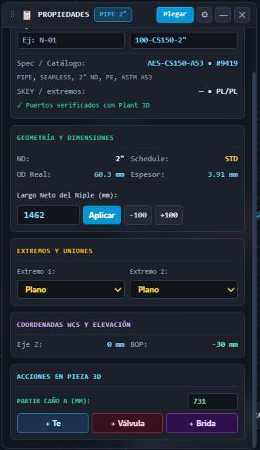
Girar una te o un codo
Si el ramal o el codo quedó para el lado equivocado, se gira sobre su eje.
- Seleccioná la te o el codo y desplegá Propiedades.
- En Girar tocá +90° o −90°. Para una te también está 180° y para un codo +45°.
- Lo que estaba conectado a esa pieza gira con ella.
Marca, número de línea y extremos del niple
Para que la lista de cortes y el taller hablen el mismo idioma.
- Marca: en Propiedades, campo Tag / ID Pieza, escribí la marca del niple (por ejemplo N-01) y confirmá con Enter o tocando afuera.
- Línea: en Line Number podés cambiar la línea de esa pieza sola. El campo de la cinta cambia la línea de lo que traces de ahí en adelante.
- Extremos: en Extremo 1 y Extremo 2 elegí Plano, Bisel o Roscado. Salen así en la lista de cortes y en los planos.
Borrar, deshacer y rehacer
Todo se puede deshacer.
- Borrar una pieza: seleccionala, desplegá Propiedades y tocá 🗑 Borrar Pieza. Queda una boca libre donde estaba.
- Deshacer y rehacer: ↩ y ↪ en la cinta. Guarda los últimos 50 pasos del proyecto abierto.
- Empezar de cero el modelo: ↺ vacía el proyecto abierto. Si fue sin querer, tocá ↩ enseguida.
Ida y vuelta con Plant 3D
Abrir un PCF de Plant 3D
El PCF es el archivo con que la línea va y vuelve entre Plant y la app. Cada PCF que abrís crea un proyecto nuevo.
- En la oficina: en Plant 3D 2027 exportá la línea a PCF y mandá el archivo al celular (WhatsApp, mail, Drive).
- Desde la app: tocá 📂 ABRIR PCF en la cinta, o Proyecto ▾ → Abrir PCF, y elegí el archivo. Podés elegir varios PCF a la vez: se crea un proyecto por cada uno.
- Desde WhatsApp o Drive (Android, con la app instalada): mantené apretado el archivo, tocá Compartir y elegí Plant 3D.
- Leé la línea de estado: cuántas piezas y caños tiene, cuántas bocas libres y qué bloques omitió (soldaduras, juntas y espárragos, que Plant vuelve a generar).
Exportar el PCF corregido y cargarlo en Plant 3D 2027
La vuelta: el PCF con tus correcciones entra a Plant con el comando PCF to Pipe.
- Tocá Iso / DXF en la cinta y bajá hasta Archivo de Tubería (.PCF).
- Dejá elegido Volver a Plant 3D. Es el formato que acepta PCF to Pipe: una spec por pieza, sin soldaduras ni juntas, que Plant agrega solo.
- Tocá ⬇ DESCARGAR ARCHIVO .PCF. Ver Código muestra el texto y Copiar lo copia.
- En Plant 3D 2027, con el proyecto y la spec correctos abiertos, ejecutá PCF to Pipe y elegí el archivo.
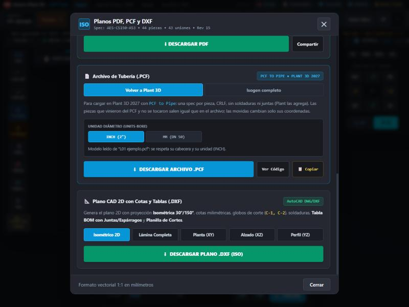
Administrar proyectos y pasarlos a otro equipo
Todo vive en el equipo donde trabajaste. Para pasarlo a la PC o a un compañero se usa una copia.
- Tocá Proyecto ▾. Cada tarjeta muestra la línea, cuántas piezas y notas tiene, cuándo se cambió y de qué PCF vino.
- Abrir: tocá la tarjeta. Renombrar: Renombrar.
- Pasar a otro equipo: Copia .achero baja un archivo con el modelo, la base, las notas y las fotos. En el otro equipo, ábrilo con Abrir PCF o copia (.achero).
- Borrar: Borrar y después Borrar definitivamente.
Taller
Lista de cortes y materiales
Para el cañista: qué niples cortar, de qué largo y con qué extremos. Y el cómputo de materiales.
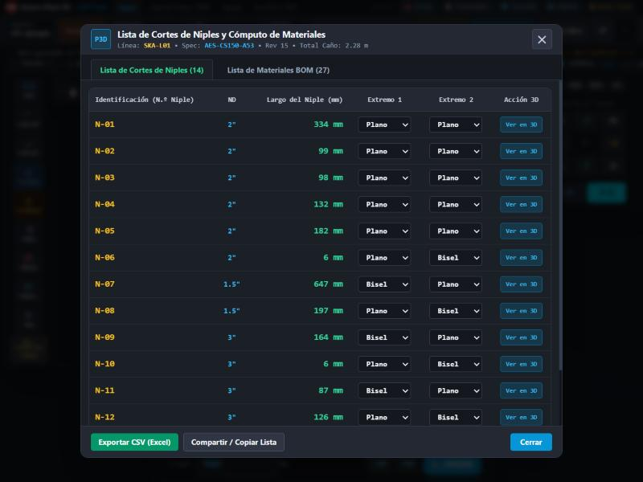
- Tocá Lista de Cortes en la cinta.
- En Lista de Cortes de Niples está cada niple con su marca, diámetro, largo y extremos. Podés cambiar los extremos desde ahí, y Ver en 3D te lleva al niple.
- En Lista de Materiales BOM está el cómputo de caño, accesorios, juntas y espárragos.
- Exportar CSV (Excel) baja la planilla. Compartir / Copiar Lista la manda por WhatsApp o la copia como texto.
Spools y soldaduras de campo
La app parte la línea en spools como Isogen: cada spool termina en una brida o en una soldadura de campo.
- Tocá Spools en la cinta. Cada renglón es un spool con sus cortes, soldaduras, tamaño para transporte y peso aproximado.
- Tocá un spool para ver sus cortes de caño, accesorios y soldaduras numeradas (W-01, W-02…).
- Para marcar una soldadura como de campo, tocá al lado de ella FW (soldadura de campo) o FFW (de campo con sobrelargo de 100 mm en el caño para ajustar en obra). El spool se parte ahí. Taller la vuelve a taller.
- Prendé Colorear en 3D para ver cada spool de un color. Lo gris son materiales de montaje.
- En Materiales de montaje están las válvulas e instrumentos bridados, que no van en ningún spool.
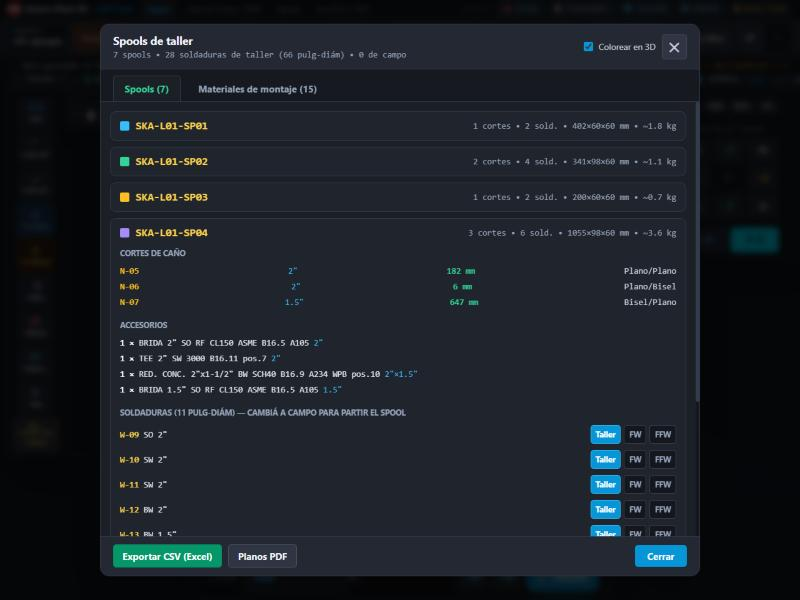
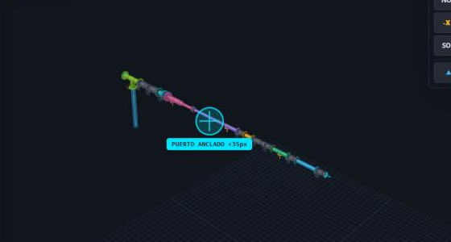
Planos isométricos en PDF
Isométrico de la línea y uno por spool, con cotas, globos, soldaduras, lista de materiales, cortes y rótulo.
- Tocá Iso / DXF. Arriba está Planos isométricos (PDF).
- Completá Proyecto, Dibujó y Revisión, y elegí la hoja A3 o A4. Quedan recordados para la próxima.
- Marcá qué querés: Línea completa, Un plano por spool, o los dos.
- Revisá cada hoja tocando las pestañas (Línea, SP01, SP02…).
- ⬇ DESCARGAR PDF o Compartir.
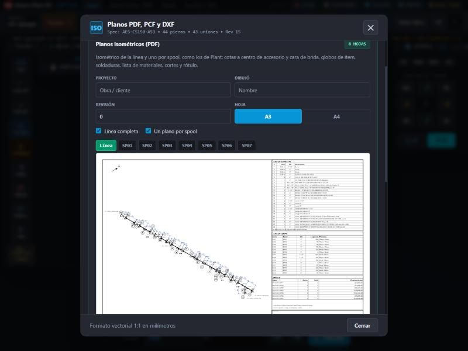
Plano DXF para AutoCAD
Un plano 2D en milímetros para abrir en AutoCAD.
- En Iso / DXF, bajá hasta Plano CAD 2D con Cotas y Tablas (.DXF).
- Elegí la vista: Isométrico 2D, Lámina Completa, Planta (XY), Alzado (XZ) o Perfil (YZ).
- Tocá ⬇ DESCARGAR PLANO .DXF.
En obra
Ver qué cambió respecto de Plant
La lista de todo lo que corregiste, para que la oficina técnica sepa qué revisar.
- Tocá Campo en la cinta. La pestaña Cambios lista cada pieza agregada, borrada, movida o editada, y cada soldadura marcada de campo.
- Las piezas que solo se corrieron porque alargaste un caño van juntas en un renglón (“41 piezas arrastradas”).
- Tocá un cambio para ir a esa pieza en 3D.
- Prendé Colorear en 3D: agregadas en verde, movidas en amarillo, editadas en celeste, soldaduras en naranja y lo que no cambió en gris.
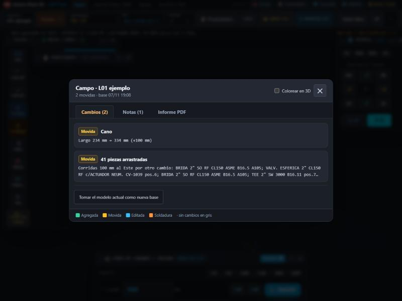
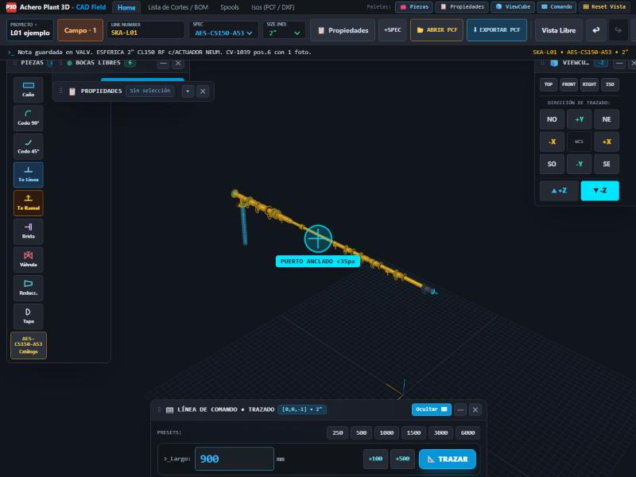
Notas con fotos
Lo que no entra en el modelo (una interferencia, un soporte, una duda) va en una nota con foto.
- Si la nota es de una pieza, primero tocala en 3D para seleccionarla.
- Tocá Campo y la pestaña Notas. Arriba dice a qué pieza se asocia, o “Nota general”.
- Escribí la nota. Tocá 📷 Sacar foto para usar la cámara o 🖼 Galería para elegir fotos que ya tenías. Podés agregar varias.
- Tocá Guardar nota. Las fotos se achican para no llenar el celular.
- Tocá la pieza en la nota para ir a ella en 3D, o una foto para verla grande.
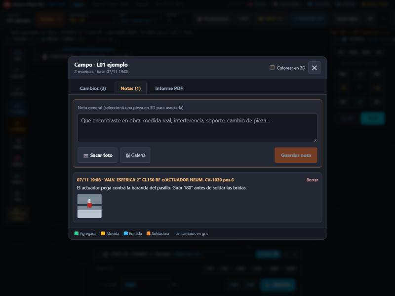
Informe de campo y nueva base
Un PDF para mandar a la oficina junto con el PCF corregido.
- En Campo, pestaña Informe PDF, escribí tu nombre en Relevó.
- Dejá marcado Agregar el isométrico de la línea como quedó si querés que el plano vaya al final.
- Tocá ⬇ DESCARGAR INFORME o Compartir. El informe trae el resumen, la tabla de cambios y cada nota con sus fotos.
- Mandá el informe y el PCF (guía 22) a la oficina.
- Cuando la oficina ya cargó el PCF en Plant, volvé a la pestaña Cambios y tocá Tomar el modelo actual como nueva base. La lista vuelve a cero y lo próximo que cambies se mide desde ahí.
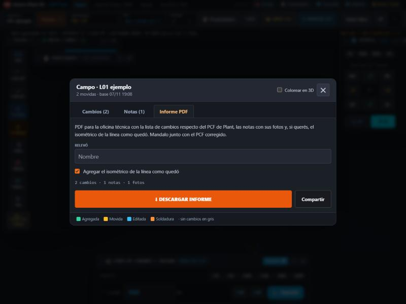
Trabajar sin señal y actualizar la app
En obra no hace falta conexión.
- Sin señal aparece abajo “Sin conexión · los cambios se guardan en este equipo”. Todo funciona: trazar, corregir, spools, planos, notas, fotos y el informe.
- Lo que necesita señal es mandar los archivos (WhatsApp, mail). Bajalos igual y mandalos cuando vuelvas a tener conexión.
- Cuando hay una versión nueva, aparece el aviso “Hay una versión nueva de la app”. Tocá Actualizar: tus proyectos no se tocan.
Referencia
Glosario
- Boca libre
- Extremo de una pieza que no está conectado a nada. Es desde donde se sigue trazando.
- Boca activa
- La boca libre desde la que sale lo próximo que insertes o traces.
- Spec
- Especificación de Plant 3D: la lista de piezas permitidas para una clase de cañería (archivos .pspc y .pspx).
- PCF
- Archivo de texto con la línea pieza por pieza. Es el formato de ida y vuelta entre Plant 3D y la app.
- PCF to Pipe
- Comando de Plant 3D que convierte un PCF en cañería del modelo.
- Eje a eje
- Medida entre los ejes de las piezas, al vértice de los codos. Así se traza.
- Largo neto
- Largo del niple a cortar, descontando lo que ocupan los accesorios.
- Take-off
- Distancia del centro de un accesorio a su boca. Es lo que se descuenta del caño.
- BOP
- Bottom of pipe: altura del fondo del caño.
- Spool
- Tramo que se arma en taller y viaja entero a la obra.
- FW / FFW
- Soldadura de campo / soldadura de campo con sobrelargo para ajustar en obra.
- Base
- El modelo tal como llegó de Plant. Los cambios de campo se miden contra la base.
- .achero
- Copia de un proyecto con modelo, base, notas y fotos, para pasarlo a otro equipo.
Problemas frecuentes
| Pasa esto | Hacé esto |
|---|---|
| No veo el modelo | Tocá EXT. |
| Desapareció una paleta | Activala en la fila de arriba o tocá ⊞ Reset Vista. |
| TRAZAR no hace nada | Leé la línea de estado. Suele ser una dirección opuesta (180°), un largo menor al niple mínimo o una pieza que la spec no tiene en ese diámetro. |
| Sale desde un lugar que no quería | La boca activa era otra. Tocá la boca correcta en 3D o usá ⇄ Cambiar Boca/Ramal. |
| “La spec no tiene esta pieza” | Cambiá de diámetro o de spec, o elegí otra familia en el Catálogo. |
| Plant rechaza el PCF | Exportá con Volver a Plant 3D, no Isogen, y revisá que la spec de Plant sea la misma de la app. |
| No aparece “Instalar la app” | La app tiene que abrirse desde su dirección segura (https). Pedísela a la oficina técnica. |
| Abrí el proyecto equivocado | Proyecto ▾ y elegí el correcto: nada se pierde al cambiar. |